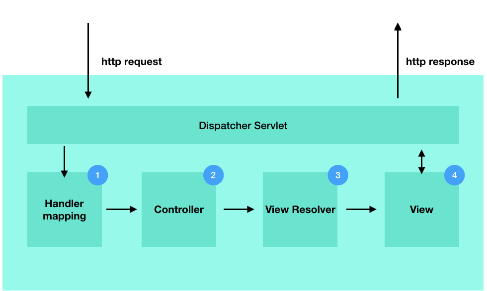
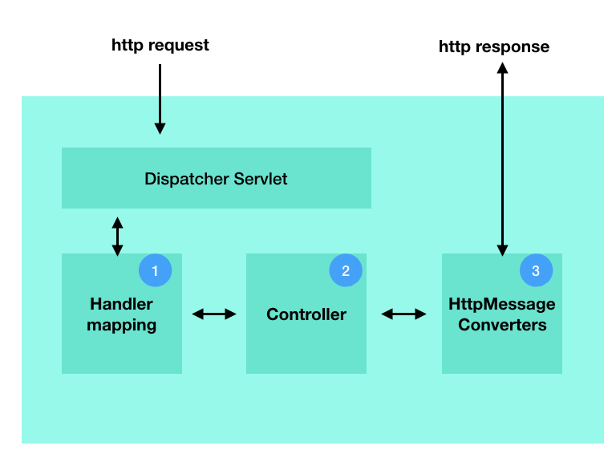

@Controller 어노테이션을 이용한 MVC 패턴
MVC는 @Controller에 기반해 작동하는 View 기반의 기술이며, REST는 @RestController 어노테이션을 이용해 객체 데이터 응답 기술입니다. 아래 그림은 전통적인 MVC 패턴 방식의 처리 과정을 보여주고 있습니다.

스프링은 사용자 요청에 대해 Dispatcher Servlet는 최종 처리 결과로 View를 Return해줍니다. DispatchServlet은 아래 각 하위 요소들을 호출함으로서 클라이언트에 최종 http 응답을 만듭니다. URI가 입력되는 Handler mapping을 이용해 컨트롤러로 연결해 줍니다. 컨트롤러에서는 MovelAndView 객체를 View Resolver로 반환합니다. View Resolver는 ModelAndView 객체를 이용해 View를 생성합니다. view 생성에 초점을 맞추고 있으므로 mime type에 따라 응답을 결정할 수 없습니다.
mim type에 따라 응답을 만드는 @ResponseBody 어노테이션
@ResponseBody 어노테이션은 응답 값을 주어진 mime type 타입에 따라 HTTP 응답합니다. 내부적으로는 HttpMessageConverters가 응답 값을 mime type에 따라 최종 응답 값을 만듭니다.
[그림] http 응답시 HttpMessageConverters를 통한 응답

코드로 보면 @RequestMapping마다 하나의 @ResponseBody를 선언합니다. 예를 들어 member/hello.xml라는 요청에 대한 xml 응답은 아래와 같이 만듭니다.
package com.example.rest;
...
@Controller
@RequestMapping("member")
public class MemberController {
@RequestMapping(value = "/{name}.xml", method = RequestMethod.GET, produces = "application/xml")
public @ResponseBody Member getMemberInfo(@PathVariable String name) {
...
return member;
}
}
@RestController 어노테이션을 이용한 REST 응답
@RestController 어노테이션은 스프링 4에서 소개된 어노테이션입니다. @Controller와 @ResponseBody 어노테이션을 합친 역할을 합니다.
@RestController = @Controller + @ResponseBody
@ResponseBody가 있어 mime type에 따라 @Controller 처럼 view를 만들 수 도 있고, json 객체 쓰기 응답을 할 수 있습니다. 디폴트 어노테이션이므로 별도 어노테이션으로 선언하지 않아도 됩니다. 그런데 @RestController의 목적상 view 응답 보다는 object/pojo 기반 응답을 주목적으로 합니다.